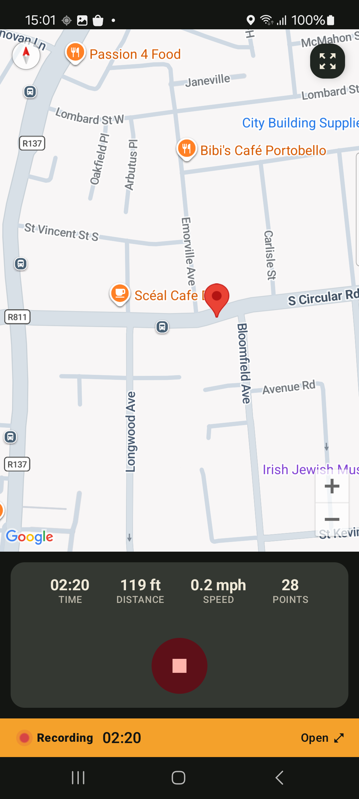

Tutorial de GPX
Como gravar e exportar faixas GPX no Android
GPX é um formato de arquivo de rota portátil utilizado por apps de mapeamento, ferramentas de exterior, software GIS e arquivos de viagens. O GPS Logger grava rotas no Android, guarda-as no seu dispositivo e depois exporta em GPX ou KML quando precisar de uma cópia.

1. Instalar o GPS Logger
Instale o GPS Logger: Rastreador Privado a partir do Google Play. Nenhuma conta é necessária para gravar rotas.
2. Permitir permissões de localização
A gravação por GPS necessita de permissão de localização. A localização em segundo plano permite que a gravação continue quando o app não está visível, o tela está desligado ou o início automático opcional após a reinicialização está ativado. O Android também mostra uma notificação em primeiro plano durante a gravação.
3. Gravar a sua rota
Toque em gravar antes de uma caminhada, trilho, passeio de bicicleta, deslocação diária, corrida, viagem de carro ou levantamento de campo. O GPS Logger armazena os pontos da rota, distância, duração e velocidade localmente no seu celular.
4. Parar e rever
Quando terminar, pare a gravação. A sua rota aparece no histórico com um mapa, estatísticas, visualização de velocidade, entrada no calendário e o contexto do atlas de lugares/países. Os usuários gratuitos veem as últimas 10 faixas no histórico da app; as faixas guardadas mais antigas permanecem no dispositivo, a menos que sejam eliminadas.
5. Exportar GPX ou KML
Abra uma faixa guardada, escolha exportar e depois guarde ou compartilhe um arquivo GPX ou KML através do Android. Também pode criar um backup em ZIP com todo o histórico de GPX. A exportação de uma única faixa utiliza a resolução total armazenada para todos os níveis.
Está a testar um fluxo de trabalho de mapeamento antes da sua primeira gravação? Descarregue uma pequena amostra de caminhada urbana em GPX.